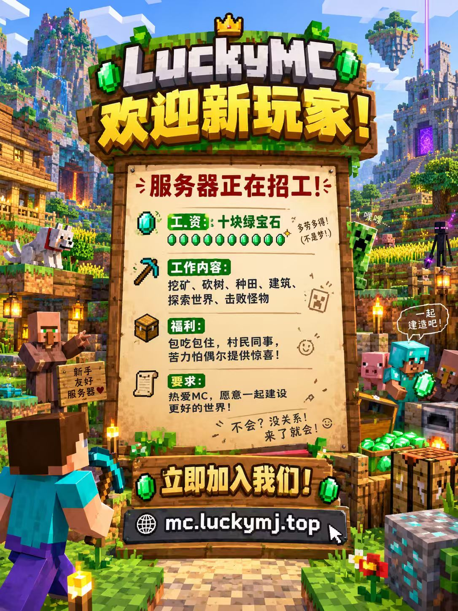

服务器招工告示
新员工入职手册

🔍 点击放大查看高清招聘海报
入职步骤
三步加入游戏
服务器在线 · Paper 26.1.2 · 畅快连入
1
准备游戏客户端
使用任意主流启动器（HMCL、PCL2 或 Minecraft 原版启动器），选择 Java 版 1.21+ / 26.1.2 版本启动。查看启动器推荐与教程 →
2
添加多人游戏服务器
点击「多人游戏」→「添加服务器」，输入服务器地址并保存：
mc.luckymj.top
* 默认端口为 25565，直接填写上方域名即可自动连接。
3
进入世界，领取绿宝石
双击进入服务器，遵守《玩家公约》，向大家打个招呼，开启属于你的全新生存篇章！
新手答疑
常见问题 FAQ
服务器支持什么版本和平台？
服务器基于 Minecraft Java 版运行，核心为 Paper 26.1.2（兼容 1.21.x 主流版本）。推荐搭配 Fabric + 钠 (Sodium) 模组以获得极佳帧率体验。
连接失败或提示通信错误怎么办？
1. 请检查游戏版本是否为 Java 版；
2. 确认服务器地址无多余空格：mc.luckymj.top；
3. 若提示网络超时，可尝试切换 DNS 或稍后重试。
每日十块绿宝石如何领取？
新玩家加入游戏后即可在主城或向管理人员领取启动物资。日常保持活跃与签到，绿宝石工资每日按时发放！详见《新手指南》。
有玩家交流群或社区组织吗？
服务器设有专属玩家交流群，进服后可留意游戏聊天框公告，或通过服主获取最新活动通知与建筑分享。